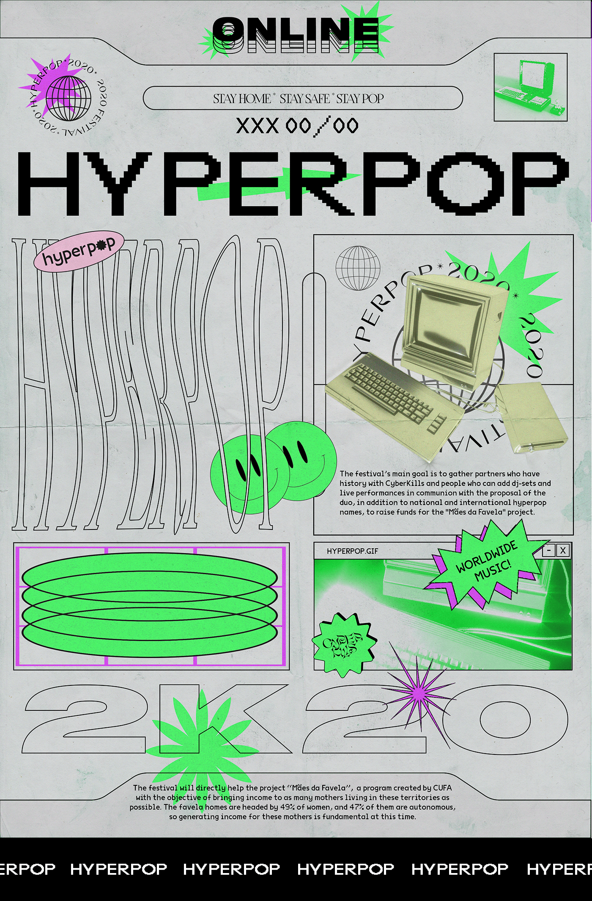

Hyperpop

Материал из Википедии — свободной энциклопедии
Гиперпоп (англ. hyperpop) или хайперпоп — свободно определяемое музыкальное
направление,
характеризующееся преувеличенным подходом к популярной музыке.
Само название жанра происходит от понятия гиперболизации (англ. hyperbolic),
то есть «чрезмерного преувеличения», отсюда и приставка «hyper».

- Содержание
Гиперпоп отличается преувеличенным,
самореференциальным подходом к поп-музыке и обычно использует такие элементы,
как дерзкие синтезаторные мелодии, автотюн вокал, «earworm», чрезмерное сжатие и искажение,
а также сюрреалистические или ностальгические отсылки к интернет-культуре нулевых и эпохе Web 2.0
- Происхождение
Работник Spotify Гленн Макдональд заявил,
что впервые увидел термин гиперпоп в отношении британского лейбла PC Music в 2014 году,
но название не считалось жанром до 2018 года.
- Популярность
В августе 2019 года Spotify запустил плей-лист «Hyperpop»,
который ещё больше укрепил жанр и включал в себя 100 Gecs,
A.G. Cook, Slayyyter, Gupi, Caroline Polachek, Hannah Diamond и Kim Petras.
Russia, Novosibirsk
+7 (999) 666-1337
© GeekBrains 2022